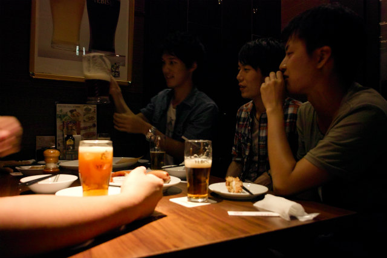

| ・研究室でビアガーデン2013＠ライオン (H25.09.03) | |||
去年は8/24でしたが、今回は9月に入ってしまいました。3年ぶりにライオンに来ました。明日が院試発表の日で落ち着きのない日ですが、みんなで集まって飲んでいるのは良いことです。 |
|||
|
去年と同じ場所と思いましたがこの天気 |
嵐の前の静けさ | ||
|
E田＆task |
E川さんが悪い顔になってる | ||
|
幹事はムーくん |
乾杯の酒をまわす！ | ||
|
川崎さんに一献 |
A井くんにもやろ | ||
|
E川＠手酌（事故） |
乾杯！ypaaa! | ||
|
今日は学生全員集合 |
F木すすめるねぇ | ||
|
A井＠倍返しだ! |
task@うんざり | ||
|
黒うめぇー |
M宅＠様子見中 | ||
|

H井くん攻めていきます |
場がこなれてきました | ||
|
全部ジンジャーエール？ |
結局、K井くんが引き当てました | ||
|
宴もたけなわというところ |
taskの一本締め！ | ||